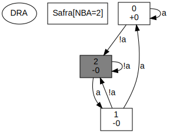
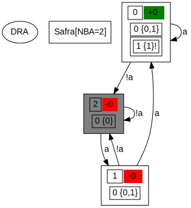
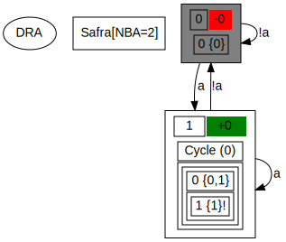
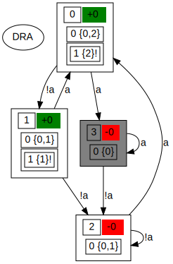

© 2005-2015 Joachim Klein <j.klein@ltl2dstar.de>
Contents
ltl2dstar ("LTL to deterministic Streett and Rabin automata") converts formulas in Linear Time Logic to deterministic ω-automata, specifically Rabin (DRA) and Streett automata (DSA).
It is an implementation of Safra's construction to translate non-deterministic Büchi automata (NBA) to deterministic Rabin automata, which has a worst-case complexity of 2O(n log n), with n being the number of states in the NBA. ltl2dstar employs optimizations and heuristics in an attempt to generate smaller automata in practice. It uses external LTL-to-Büchi translators for the conversion from LTL to NBA and can thus benefit from the state-of-the-art algorithms, implementations and optimizations available in this well researched area.
You can download the latest version of ltl2dstar at http://www.ltl2dstar.de/.
A Makefile for GNU Make and the GNU C++ compiler is provided in the src directory. Note that ltl2dstar uses C++11 features and thus needs a compiler that supports these features.
To compile, just type make in the src subdirectory. If everything works correctly, this will create the program file ltl2dstar, which you may copy to a convenient location.
tar xzvf ltl2dstar-0.5.3.tar.gz cd ltl2dstar-0.5.3/src make # (on Linux) gmake # (on *BSD)
If you have problems compiling or have success compiling using another compiler, please drop me an e-mail.
There is also a Makefile for CMake, see the README file.
ltl2dstar can be compiled using a GNU C++ version for Windows (like cygwin or mingw) or using current Microsoft Visual C++ compilers. You have to make sure that the src directory is in the include path.
A compiled binary for Win32 systems is included in the ZIP archive.
To generate DRA/DSA for an LTL formula, ltl2dstar relies on external LTL-to-NBA translators. There are many different translators available, each providing a different command-line interface.
Tool specifications:
You can specify how the translator is called by providing the command and arguments,
using the following placeholders (inspired by the notation of Spot's ltlcross):
| Placeholder | Replacement |
|---|---|
| %s | LTL formula in Spin syntax |
| %S | Filename of a file containing the LTL formula in Spin syntax |
| %l | LTL formula in LBT(T) syntax |
| %L | Filename of a file containing the LTL formula in LBT(T) syntax |
| %N | Filename for the automaton file (in Spin neverclaim syntax) |
| %T | Filename for the automaton file (in LBT(T) syntax) |
| %H | Filename for the automaton file (in HOA syntax) |
The filename placeholders can be used as-is or as the source or target of a redirection of the standard input/output of the tool. As an example, in the specification
the %s will be expanded to the formula in Spin syntax and the automaton in neverclaim format is read from the standard output. For
the formula is written, as a single line, to a file, which is piped to the standard input of the tool, while the output automaton (in HOA format) is read from the filename of %H.
To provide the LTL-to-Büchi translator, ltl2dstar provides the --ltl2nba command line option, which can take a tool specification as described above (with suitable quoting of the white space or special shell characters in the argument):
On Windows, you generally have to "double-quote" the whole argument.
Shortcuts spin/lbtt:
Furthermore, for historical reasons and for convenience, two shortcuts are available for the Spin and LBT(T) calling convention. For the Spin calling convention, use
which are, respectively, equivalent to
For the LBT(T) calling convention, use
which are, respectively, equivalent to
Path:
In general, the tool part may be an absolute or relative path to the tool executable. If it does not contain a path separator,
first the current directory is considered as the location of the tool executable and then the PATH is searched.
Tools:
The following table gives an overview of translators that have been successfully used with ltl2dstar and their tool specifications:
| Program | Remarks | |
|---|---|---|
| ltl2ba | download | Written in C, uses a translation via alternating automata [GastinOddoux01]. Via spin:ltl2ba or ltl2ba -f %s > %N |
| Spot's ltl2tgba | download | Written in C++,
supports advanced simplification algorithms [Duret-Lutz14]. Check out the cool web interface to ltl2tgba. Via spin:ltl2tgba@-B -D -s (Spin interface), ltl2tgba --lbt-input %l -B -D -H > %H (LBT input, HOA output), ... The -B selects Büchi automaton output, the -D signals a preference for deterministic automata. |
| ltl3ba | download | Written in C++, extended version of ltl2ba with additional simplifications [Babiak+12]. Via spin:ltl3ba or ltl3ba -H3 -f %s > %H (HOA output of the NBA). |
| spin | download | Full-featured model checker, can also be used to translate LTL formulas to NBA. Based on [GerthPeledVardiWolper95]. Via spin:spin or spin -f %s > %N. |
| LTL->NBA | download Offline | Written in Python, using alternating Büchi automata and simulation relations [FritzWilke03]. Via lbtt:script4lbtt.py or script4lbtt.py %L %T. |
| Modella | download Offline | Written in C, tries to produce "more deterministic" NBA [SebastianiTonetta03]. Via lbtt:modella or modella %L %T. |
For a comparison of several LTL-to-NBA translators in the context of subsequent determinization, you are referred to the diploma thesis (state of 2006).
Examples:
ltl2ba in current working directory or on the PATH
ltl2ba at specific location
Spot's ltl2tgba in current working directory or on the PATH (-s enables Spin input/output)
ltl3ba in current working directory or on the PATH, with HOA output
Spin in /usr/bin/spin:
Recommendations:
For the generated automata and where available,
we suggest the use of the LBT(T) automata format (stable code)
as well as the %H placeholder for the HOA format.
For the LTL syntax, we prefer the LBT(T) syntax due to the
ease of parsing provided by the prefix format, without parentheses and operator precedence rules.
In these examples we will use ltl2ba as the LTL-to-NBA translator and assume that the executable is located in the current working directory or on the PATH.
ltl2dstar can output the generated automata either as a text file as described later or in a format that can be translated using the dot tool from the graphviz package.
The following commands put the formula "F G a" (Finally Globally a) in prefix format into the file FGa.ltl, translate this to a dot-representation of the automaton in file FGa.dot and then generate a PDF file FGa.pdf containing the automaton:
echo "F G a" > FGa.ltl ltl2dstar --ltl2nba=spin:ltl2ba --stutter=no --output-format=dot FGa.ltl FGa.dot dot -Tpdf FGa.dot > FGa.pdf
Note: We use the command line option --stutter=no to disable the use of the stuttering construction to get the automaton as it is generated by Safra's algorithm (see Stuttering).
Result:

The start state is shaded gray. The first number in the states is the name of the state, the second row is the acceptance signature for this state (see Semantics).
To see the Safra trees that make up the states of the automaton, we can use the command-line option --detailed-states=yes:
echo "F G a" > FGa.ltl
ltl2dstar --ltl2nba=spin:ltl2ba --stutter=no --output-format=dot \
--detailed-states=yes FGa.ltl FGa_detailed.dot
dot -Tpdf FGa_detailed.dot > FGa_detailed.pdf
Result:

The upper left number in the states is the name of the state, on the right of it is the acceptance signature for this state (see Semantics). Below this line, we can see the trees used in the construction process.
You can use '-' as the argument for the formula file to get the LTL formula directly from standard input (the console):
echo "F G a" | ltl2dstar ...
Using '-' as the argument for the output file, the automaton is output on the standard output.
Since version 0.5, ltl2dstar supports the stuttered translation from NBA to DRA. Provided that the formula is invariant under stuttering, this allows the merging of intermediate states that are redundant under stuttering, leading to potentially smaller automata.
For formulas/automata that are not completely insensitive to stuttering, we can determine the exact set of symbols for which stuttering is allowed and use the stuttered translation only on exactly these symbols. Determining the set of symbols for which stuttering is allowed is unfortunately PSPACE-complete and is not enabled by default (use --partial-stutter=yes to enable). The user of ltl2dstar should determine if the additional time needed to check the stutter invariance is an acceptable trade-off for getting potentially significantly smaller automata.
Stuttering for formulas not containing the NextStep operator (X) (which are completely insensitive to stuttering), is enabled by default (--stutter=no to disable).
echo "F G a" > FGa.ltl
ltl2dstar --ltl2nba=spin:ltl2ba --stutter=yes --output-format=dot \
--detailed-states=yes FGa.ltl FGa_stutter.dot
dot -Tpdf FGa_detailed.dot > FGa_stutter.pdf
Result:

Since version 0.5.3, ltl2dstar supports the direct determinization of NBA using the --input=nba option. With this option, the input file is expected to be a non-deterministic Büchi automaton in HOA format. As an example, consider the following HOA automaton:
HOA: v1
name: "eventually always alternating a and !a"
AP: 1 "a"
Start: 0
States: 3
Acceptance: 1 Inf(0)
acc-name: Buchi
--BODY--
State: 0
[ t] 0 /* true -> 0 */
[!0] 1 /* !a -> 1 */
State: 1 {0} /* accepting state */
[ 0] 2 /* a -> 2 */
State: 2 {0} /* accepting state */
[!0] 1 /* !a -> 1 */
--END--
This automaton recognizes the language of the ω-regular expression true* ; (a ; !a)ω, i.e., eventually there will be always alternation between atomic proposition a being true and a being false.
Assuming this automaton is stored in file nba.hoa, we can generate a deterministic automaton via
ltl2dstar --input=nba --output-format=dot --detailed-states=yes nba.hoa dra-from-nba.dot dot -Tpdf dra-from-nba.dot > dra-from-nba.pdf
Result:

Complementing the language:
If the input is an LTL formula, we can easily complement the recognized language just by negating the formula.
For an NBA input, negation is more complicated. However,
we can exploit the duality between Rabin and Streett acceptance to complement the recognized language. Using the
--complement-input=yes option, ltl2dstar first determinizes the NBA to a deterministic Rabin automaton (DRA), as usual.
But before outputting the deterministic automaton, it switches the acceptance to Streett, effectively complementing the language. The output in this constellation
is therefore a deterministic Streett automaton.
Trusting HOA properties, Stuttering:
To determine whether a language is stutter insensitive, ltl2dstar usually inspects the
LTL formula for absence of the next step operator. Optionally, it can analyze the NBA for partial stutter-insensitiveness,
relying on the easy access to the complement NBA constructed for the negated formula.
In case that only an NBA is given as input, ltl2dstar can not efficiently determine stutter-insensitiveness. However, if the HOA automaton has the stutter-insensitive property, ltl2dstar will use this information during the determinization construction. For this to yield a correct deterministic automaton, it trusts that the property has been added by the automaton's producer only if the language is indeed stutter insensitive. You can change the default behavior of trusting properties with the --trust-hoa-properties=no option. With this option, the language-related HOA properties are ignored.
Since version 0.5.1, ltl2dstar has a mechanism to call plugins at several points during the translation process such that users can perform additional analysis or output in a different format. Take a look inside the src/plugins directory for the interface and some sample plugins and uncomment the PLUGINS line in the Makefile to start experimenting. Activate a plugin using the --plugin command line option or using --output=plugin:name for an output plugin. There may be multiple --plugin specifications, the plugins are called in the order they are specified on the command line.
LTL formulas as used by ltl2dstar are in prefix format using the following grammar:
formula ::=
t // True
| f // False
| atomic-proposition
// propositional logic
| ! formula // Negation
| & formula formula // Conjunction (And)
| | formula formula // Disjunction (Or)
| i formula formula // Implication
| e formula formula // Equivalence
| ^ formula formula // Exclusive Or (XOR)
// temporal logic
| X formula // Next-Step
| F formula // Finally (Eventually)
| G formula // Globally (Always)
| U formula formula // Until (strong)
| V formula formula // Release (weak)
| W formula formula // Until (weak)
There is at least one space between all tokens in an LTL formula.
atomic-proposition can either be a string containing no whitespace (and not being one of the operators) and starting with a character from [a-zA-Z] or an arbitrary string enclosed in double quotes (").
| ltl2dstar notation | spin notation |
|---|---|
| & p0 "p1" | p0 && p1 |
| i G F a G F b | ([] <> a) -> ([] <> b) |
To convert LTL formulas in other formats to the ltl2dstar syntax, you can use the ltlfilt tool from Spot and select the --lbt option.
Deterministic Rabin (DRA) and Deterministic Streett Automata (DSA) are subtypes of Deterministic ω-Automata.
A Deterministic Rabin Automaton is a 5-tuple DRA=(Q, Σ, q0, δ, Acc), with:
Deterministic Streett-Automata are defined the same, they only differ in the semantic interpretation of the acceptance condition.
A run of a DRA or DSA over an infinite word σ=a0,a1, ... is a sequence of states in the DRA/DSA ρ=q0,q1, ..., with q0 being the initial state and for all qi+1=δ(qi, a0).
The infinity set Inf(ρ) of a run ρ is the set of states that occur (are visited) infinitely often in ρ.
Rabin and Street acceptance are defined as follows:
A run ρ of a Deterministic Rabin Automaton with
Acc ={(L1,U1), ..., (Ln,Un)}
is called accepting if:
There exists a pair (Li,Ui) such that the intersection of Li and Inf(ρ) is non-empty and the intersection of Ui and Inf(ρ) is empty.
A run ρ of a Deterministic Streett Automaton with
Acc ={(L1,U1), ..., (Ln,Un)}
is called accepting if:
For all n pairs (Li,Ui) the intersection of Li and Inf(ρ) is empty or the intersection of Ui and Inf(ρ) is non-empty.
When we consider the acceptance condition not in the context of the whole automaton but in the context of every individual state, we get the acceptance signature of a state: A string of the indizes of the acceptance pairs the state is a member of. If for an acceptance pair (Li,Ui) the current state is a member of Li, '+i' is part of the acceptance signature, if it is a member of Ui, '-1' is part of the acceptance signature. This allows reconstruction of the acceptance condition for the whole automaton.
The language of a DRA/DSA is defined as the set of infinite words (subset of Σω) that have an accepting run on the automaton.
The following grammar defines the output format (version 2) for DRA and DSA introduced by ltl2dstar. '\n' signifies a new line, comments start with //.
automaton ::= header --- '\n' states
header ::= id comment? state-count acceptance-pairs start-state atomic-propositions
id ::= automaton-type version edge-type '\n'
automaton-type ::= DRA // Rabin automaton
| DSA // Streett automaton
version ::= v2 // Format version
edge-type ::= explicit
comment ::= Comment: "<string>" '\n' // A quoted string, optional comment
state-count ::= States: [0-9]+ '\n' // Number of states
acceptance-pairs ::= Acceptance-Pairs: [0-9]+ '\n' // Number of acceptance pairs
start-state ::= Start: [0-9]+ '\n' // The name of the start state
atomic-propositions ::= AP: [0-9]+ ap* '\n' // The number and the list of atomic propositions
ap ::= "<string>" // A quoted (") string
states ::= (state-name acceptance-signature transitions)*
state-name ::= State: [0-9]+ ("<string>")? '\n' // The name of the state
// (with an optional quoted string as a comment)
acceptance-signature ::= Acc-Sig: acc-sig* '\n' // A list of acc-sig
acc-sig ::= (+|-)[0-9]+ // + or - followed by the name of the acceptance pair
transitions ::= transition*
transition ::= [0-9]+ '\n' // The name of the 'to'-state
The following example shows the DRA output for the LTL formula 'U a b' (a until b), with the bitset and corresponding propositional description for the transitions (as comments in italic after //, that are not part of the actual output file).
DRA v2 explicit
States: 3
Acceptance-Pairs: 1
Start: 0
AP: 2 "a" "b"
---
State: 0
Acc-Sig:
1 // 00 = !a & !b
0 // 01 = a & !b
2 // 10 = !a & b
2 // 11 = a & b
State: 1
Acc-Sig: -0
1 // 00 = !a & !b
1 // 01 = a & !b
1 // 10 = !a & b
1 // 11 = a & b
State: 2
Acc-Sig: +0
2 // 00 = !a & !b
2 // 01 = a & !b
2 // 10 = !a & b
2 // 11 = a & b
For this DRA, the set of states Q is {0,1,2}, the start state q0 is state 0, there is one acceptance pair with L0={2} and U0={1}. States 1 and 2 loop back to themselves on any input, state 1 transitions to state 2 on an input containing 'b', to state 1 on an input not containing 'a' and 'b' and back to itself on an input with 'a' but not 'b'.
The Hanoi Omega-Automata Format (HOA) was recently introduced [Babiak+15] and aims at a flexible and robust exchange format for ω-automata.
Using the --output-format=hoa option (or the -D short cut), ltl2dstar will output automata in HOA format. The deterministic automata will be complete, have Rabin or Streett state-based acceptance and implicit transition labels. The non-deterministic automata will have state-based Büchi acceptance and explicit transition labels.
For further information, visit the HOA tool support page and the HOA page on automata.tools.
Invocation of ltl2dstar:
If input-file or output-file are '-', standard input/output is used.
| Option | Description |
|---|---|
| External LTL-to-Büchi translator | |
|
--ltl2nba=tool arguments --ltl2nba=interface:path --ltl2nba=interface:path@parameters |
Specifies the external LTL-to-NBA translator to use, see above. interface can be either spin or lbtt. parameters are passed through to the LTL-to-NBA translator. Default (ltl2ba in current working directory): --ltl2nba=spin:ltl2ba |
| Automata types | |
|
--automata=rabin,streett --automata=rabin --automata=streett --automata=original-nba |
Which automata types should be generated? Use original-nba to get the NBA as generated for the formula by the external LTL-to-NBA translator. Default: --automata=rabin |
| Input options | |
|
--input=ltl --input=nba --output=plugin:name |
What is the format of the input?
Default: --input=ltl |
| --complement-input=yes/no |
Should the input be complemented? In case of --input=ltl, negate the formula. In case of --input=nba, generate a deterministic Streett automaton recognizing the complement language of the NBA. Default: --complement-input=no |
| --trust-hoa-properties=yes/no |
Should properties headers in a parsed HOA automaton be trusted?
Currently, this concerns the stutter-insensitive property.
Default: --trust-hoa-properties=yes |
| Output options | |
|
--output=automaton --output=nba --output=plugin:name |
What should be output?
Default: --output=automaton |
|
--output-format=native --output-format=hoa --output-format=dot |
What should be the output format?
|
| --detailed-states=yes/no | Output detailed descriptions of the internal structure of the states of the DRA/DSA. This includes Safra trees, the internal structure of the product automaton of the union construction and the equivalence class of the automaton after the bisimulation optimization, as well as which states where used in the stuttered translation.
Default: --detailed-states=no |
| Optimizations | |
| --safra=options | Enable/disable "on-the-fly" optimizations of Safra's construction. options is a comma-seperated list of the following options (with a minus '-' to disable), interpreted left-to-right:
--safra=all,-rename Example: Only renaming and reordering: --safra=rename,reorder Default: --safra=all |
| --bisimulation=yes/no | Enable/disable calculation of the quotient automaton.
Default: --bisimulation=yes |
| --opt-acceptance=yes/no | Optimize acceptance condition.
Default: --opt-acceptance=yes |
| --union=yes/no | Enable/disable the construction of the union DRA for formulas with the logical disjunction as top-level operator.
Default: --union=yes |
| --scheck=path | Enable the direct calculation of a deterministic Büchi automaton using the tool scheck for the subset of safety/co-safety LTL formulas. The executable is given by path.
Default: disabled. |
| Stuttering | |
| --stutter=yes/no | Enable/disable stuttering in the construction of the deterministic automaton. Default: --stutter=yes |
| --partial-stutter=yes/no | Enable/disable determining the exact set of symbols that are stutter insensitive, which allows using the stuttering construction even in the case that the formula contains the Nextstep operator. This option only has an effect if --stutter=yes. Default: --partial-stutter=no |
| Plugins | |
|
--plugin=name --plugin=name:argument |
Activate the plugin called name, optionally configured with argument. |
| Short options | |
| -t 'X' | Expanded to --ltl2nba='X'. |
| -D | Expanded to --output-format=dot. |
| -H | Expanded to --output-format=hoa. |
| -B | Expanded to --input=nba (HOA NBA input). |
| Other | |
| --help | Print command line help and quit. |
| --version | Print version string to standard out and quit. |
ltl2dstar is designed to use an external tool to convert LTL formulas to a non-deterministic Büchi automaton (NBA) as the first step in generating a deterministic ω-automaton. It thus has to be able to output LTL formulas in the proper syntax and to read the produced automata.
The LBT(T) interface is the one used by the LTL-to-Büchi testbench lbtt, extending lbt. For a description of the input format of the LTL formulas (placeholders %L and %l) and the output format of the NBA (placeholder %T) see this description.
With the lbtt: shortcut, the LTL-to-NBA translator will be called as follows:
path-to-translator parameters input-file output-file
The input-file will contain a single line with the LTL to be translated. After execution, output-file should contain the generated NBA.
Currently, only non-generalized NBA (i.e. NBA with only a single acceptance condition) are supported. The extension of the output format that also allows acceptance on the transitions and not only on the states available with lbtt in version >1.1.0 is not supported by ltl2dstar.
The model checker spin converts LTL to formulas to never claims (placeholder %N), constructs in the programming language PROMELA that spin uses. ltl2dstar does not attempt to parse the full range of PROMELA language constructs that could be used in never claims, but instead focuses on the simpler structure used by actual translators, such as spin and ltl2ba. This subset may be insufficient in the future or for other translators
A translator conforming to the SPIN interface will be called as follows:
path-to-translator -f "ltl-formula"
The LTL formula (placeholders %L and %l) is in infix form using the SPIN syntax for the operators always ([]) and eventually (<>), see the documentation.
The generated automaton is output by the translator on the standard output.
Since version 0.5.3, ltl2dstar can read non-deterministic Büchi automata in the HOA format. Currently, only automata with a single starting state, state-based acceptance, explicit transition labels and a non-generalized Büchi acceptance condition are supported. The parser is implemented using the cpphoafparser library.
As ltl2dstar produces a deterministic, complete automaton, with an explicit transition for every combination of atomic propositions, translating formulas or NBA with a large number of atomic propositions becomes infeasible. For efficient storage of the automaton, there is therefore a hard-coded limit of at most 32 atomic propositions.